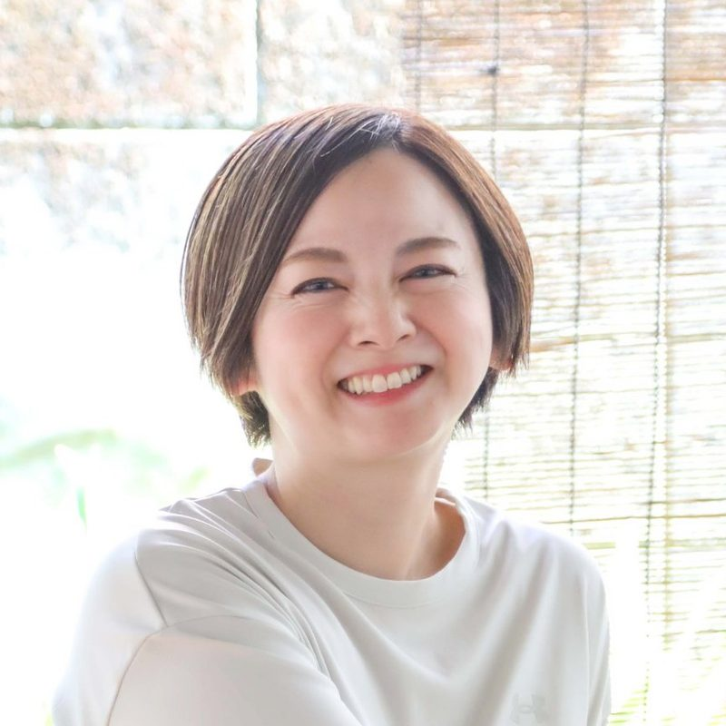

わたしについて

幼い頃から野口整体に触れてきました。長年の会社員生活を経て、今は野口整体をベースにした個別ケアや学びの場をつくっています。
私が野口整体から受け取ったもの
「わたしと野口整体」をnoteで読む私は2歳の頃から、師匠である叔父の整体を受けて育ちました。野口整体は、大人になってから学び始めた健康法ではなく、幼い頃から暮らしの中にあったものです。
その後、金融業界で約25年間働き、営業や人材育成、組織づくりなど、さまざまな仕事に携わってきました。
多くの人と関わる中で、身体のことも、人が学ぶことも、働くことも、暮らすことも、それぞれが切り離されたものではないと感じるようになりました。
私が師匠から受け取ってきたものは、身体を観る技術だけではありません。
一人の人間として尊重されること。自分の中にある力を大切にすること。そして、自分自身の人生を生きること。
自分の中にも力がある。
そんなことを、私自身も野口整体を通して受け取ってきたように思います。
だからこそ、いま私が届けたいのも、ただ不調を整えるための時間だけではありません。
身体を通して自分自身に目を向けたり、誰かとの関わりを見つめ直したり、何かを学ぶきっかけになったり。
それぞれの人が、自分の持っている力を生かして、活き活きと生きていく。そのための機会を、少しずつ増やしていきたいと思っています。
会社員としての経験、そして今
約25年間、金融業界で営業、人材・組織開発、研修、経営戦略などに携わってきました。BBT大学経営学部で学び、2024年に退職。その後、師匠のもとで寝食をともにしながら整体の修行を積み、2025年にさこうクリエーションラボを開業しました。
現在は、野口整体をベースにした個別ケアや、セルフケア講座を開いています。あわせて、会社員時代の経験を生かし、人や組織に関わる仕事も続けています。これまで小学校の支援員を務めたほか、地域でも、子どもや子育て世代の方々、さまざまな活動をしている人たちと関わってきました。野口整体が大切にしてきた人間教育の視点を、組織や教育、地域の場でどう生かしていけるか。いまも模索を続けています。
必要なときに思い浮かぶ存在でありたい
ケアを受け続けること自体が目的になる関係ではなく、必要なときに安心して相談できる関係を大切にしています。
その人が自分自身の力で生きていくことを支えながら、自分も学び続けていきたいと思っています。